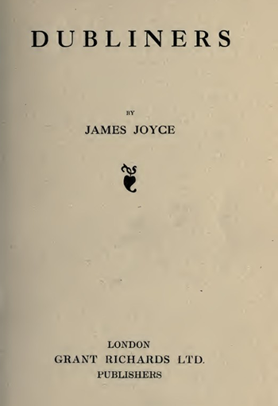

The Life of
James Joyce

There's no friends like the old friends.
— James Joyce, Dubliners
All About Dubliners
Written by James Joyce
Published in 1914, Dubliner’s is one of James Joyce’s early works depicting a vignette of middle-class Irish life in Dublin. The book holds a collection of 15 stories that mimic the stages of life from childhood to death.
Joyce’s intentions behind the book was to “write a chapter of the moral history of his country”. The book begins with the childhood stage of life with stories that focus on themes of innocence, disillusionment and unsettling encounters. Shifting to adolescence, Joyce’s writings in Dubliners take a turn, focusing on the complexities of young adulthood such as missed opportunities and one’s struggle for independence. The book then shifts into the more mature stages of life analyzing the frustrations and mundanity of adulthood characterized by unfulfilled ambitions and the characters personal failings. Dubliner ends on a critical lens of public life, holding Dublin’s social and political landscape under a microscope revealing its hypocrisy stagnation and the vice-like grip the Dublin’s past and Irish history has on the city and its people.
The final chapter in Dubliner’s, “the Dead”, is noted as the masterpiece of this collection and has been hailed by prominent literary figures, like T.S. Elliot, James Baldwin, and more.

Book Recommendations
If You Enjoyed Dubliners
-
-

The Importance of Being Earnest
A comedic play written by Oscar Wilde on the ridiculousness of propriety and etiquette.
Learn More -

An Apology for Roses
Marie Fogerty is a young girl tangled in a love triangle who exposes the social and religious hypocrisy of her small town in 1970s Ireland.
Learn More -